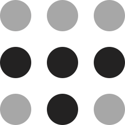

Profiles & tabs. Desktop to pocket.Browser appearance: Prism · Spectrum · Dark
Appearance
Prism / Spectrum / Dark
Your next obsession deserves its own Space.DESKTOP + FUTURE MOBILE CONCEPT
YOUR INTERNET, WITH ROOM TO BREATHE
The sidebar you reach for. The shortcuts you remember. A browser that feels like yours.
Crescent brings your tabs, projects, and favorite corners of the web together. Familiar enough to settle into. Open enough to make your own.
CRESCENT MOBILE
Reading on Medium
Read→Share→Choose Profile→Pinned
9:41
Interactive mobile concept · illustrated Medium page with original sample content
A PLACE FOR EVERY PART OF YOUR DAY
A little order. A lot of possibility.
Profiles separate your work and personal worlds. Spaces give every project a home. Your favorites are always within reach.
Each Profile. Its own world.
‹ › ⟳crescent.studio···
A GOOD DAY TO GET CURIOUS ✺
What are we into today?
↗The side projectMAKE SOMETHING
✳The rabbit holeFIND SOMETHING
◡The good stuffKEEP SOMETHING
MAKE YOURSELF AT HOME.New tab, new possibility.
Work Profile · Studio SpacePrism · Spectrum · Interface illustration
THE GOOD PARTS, CLOSE AT HAND
Stay in the flow.
Less hunting for the right tab. More getting on with whatever brought you here.
● ● ●Two pages. One place.
FIELD NOTES / 024
Good things take a little curiosity.
THE NOTEBOOKA few things to come back to.01 Follow the unexpected.02 Keep the good links.03 Make a little space.Room for one more idea.
Keep both sides of a thought.
A reference beside your work. A second perspective beside the first. Split View keeps related pages together.
↵
No example tabs match.
TYPE TO FIND YOUR WAYExample command bar
One shortcut. Straight to it.
Find an open tab or start somewhere new from the command bar. Try searching the sample tabs above.
A place for the keepers.
Pin a page with ⌘D or Ctrl+D. Keep your favorite sites in the grid above your tabs.
Your tools belong here.
Built on Chromium, with Chrome extensions as part of the experience. Your everyday workflow comes first.
Same file. Same name.
Downloads keep the names supplied by the website. Your files should be easy to recognize.
A way back.
Recently closed tabs and local recovery help you return to what matters when a session goes sideways.
YOUR NETWORK CAN BE HOME BASE
Your browser. Your devices. Your rules.
Connect your devices through a personal Crescent Hub on your own network. Choose Crescent Cloud if you’d rather have a managed connection.
A private-network option for connecting your devices around your personal Crescent Hub.
Continuity experience · in development
Your laptopWork · Studio
Your computerThe same Profile

TailscaleYour devices, connectedCrescent Hub, on your devices
Your phoneRead. Pin. Keep going.
Profiles, Spaces & pinned URLsCookies & site storage stay on each deviceYour network. Your connection.
BRING YOUR INTERNET WITH YOU
A fresh start. With your old favorites.
You’ve spent time making your browser yours. Crescent Rescue is being built to bring that organization along: Profiles, Spaces, pins, folders, and split layouts.
Choose a browser to explore the import concept.
Source coverage and complete migration are still being validated.
Crescent is in active development. The Downloads section shows public installers as they become available.
How will a page pinned on my phone reach my computer?+
The intended flow is simple: read a page in Crescent Mobile, open Share, choose Pin to a Profile, and pick a Profile under your account. Find the pinned URL in that same Profile on computers signed into the same account. A personal Hub or Crescent Cloud will carry the chosen organization between devices. The demo above illustrates this flow; real pairing and sync are still in development.
Do I have to run my own server?+
No. The personal Hub is for people who want to host their own connection. Crescent Cloud is the paid managed option being developed for people who want a connection without running a server or VPN. Everyday local browsing will not depend on either service.
What moves between devices?+
The continuity scope is the organization you choose: Profiles, Spaces, and pinned URLs. Cookies and site storage never sync. There is no cloud-synced offline webpage or article library. Website sign-ins remain on each device.
Can I bring my setup from Arc or another browser?+
Crescent Rescue is the built-in import workstream for Arc, Chrome, Zen, Dia, and Firefox. Preserving Profiles, pinned organization, folders, and split structure is the goal. Complete source coverage and extension migration are still being validated; the import illustration is sample data.
What about Chrome extensions?+
Crescent uses Chromium’s full browser foundation. Chrome extension support is a core requirement. Selected extension tests pass in development; complete compatibility and installed-extension migration still need validation.
Which computers and phones are you building for?+
The desktop scope includes macOS, Windows, and Linux. Mobile scope includes Android and iOS. The current native development evidence is on macOS; release availability will be confirmed separately. The iOS implementation path remains under feasibility review.
Is Crescent open source?+
The browser, mobile app, and personal Hub are being built toward open source. The final browser project license is still being finalized. Follow the project on GitHub as the source and contribution paths take shape.
How does Crescent compare on speed?+
Speed and stability are development goals. We will publish comparative results when reproducible release-build measurements support them.
CRESCENT BROWSER RELEASES
Find your next browser.
Checking available downloads…
Choose the installer for your computer. If its processor cannot be detected, all available versions are listed here. Follow development ↗
YOUR NEXT FAVORITE PLACE ON THE INTERNET
Make yourself at home.
Follow Crescent as it takes shape. Help build a browser worth coming back to.
 TailscaleYour devices, connected
TailscaleYour devices, connected